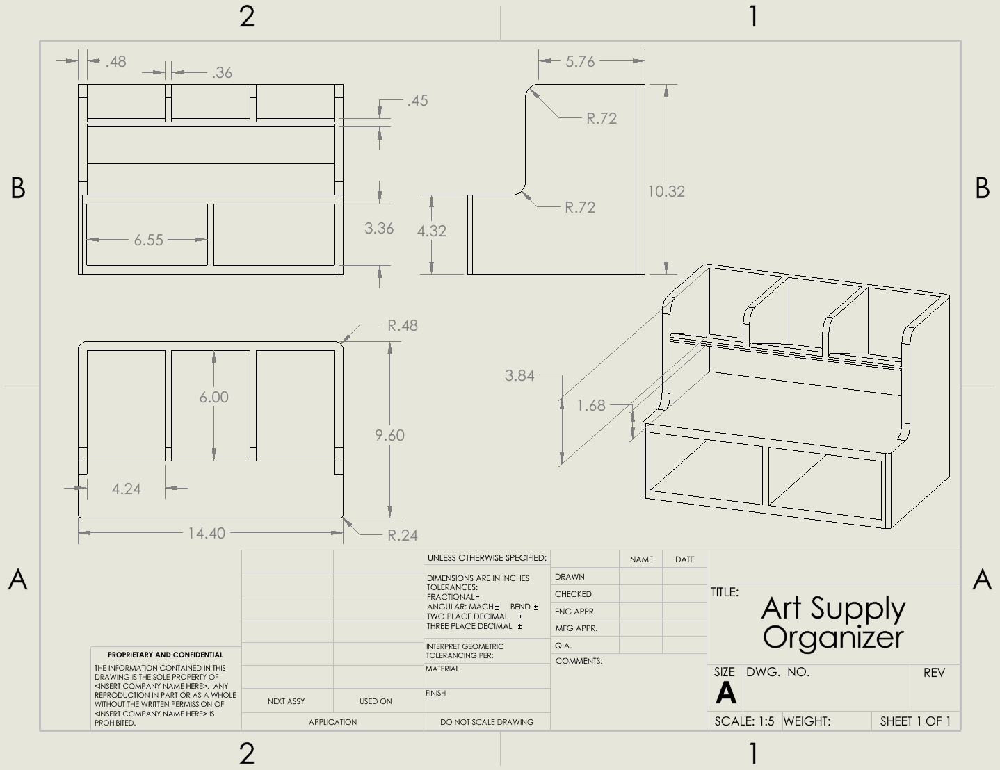

Case No. ZT-001 · Exhibit 03
Art Supply Organizer

The problem
My art supplies kept ending up in one pile. I wanted a single desk organizer that kept my Copic markers, Prismacolor markers and Prismacolor colored pencils apart, so each set was easy to find and grab.
An early SolidWorks project from high school: I modeled the organizer, then made a drawing to send to the fabrication team at school.
The design
-
Three bins
Upright bins along the back, split by dividers, keep the different supplies separated.
-
Middle shelf
A flat shelf in front of the bins for whatever is in use.
-
Two drawers
Pull-out drawers with handles underneath for extra storage.
The drawing


Fig. B: The drawing sent to the fabrication team.
Front, side and top views plus an isometric view, so the fabrication team could build the organizer without needing me there. Every dimension is in inches, including the wall and divider thicknesses and the fillet radii on the rounded edges. Overall, the organizer measures 14.40 × 9.60 × 10.32 in.